11 Motion-based tracking and beyond
11.1 Predicting the next box
We can estimate a track’s velocity from the centres of two recent boxes. For this example, we use the original confidence cutoff of 0.50 and examine T2’s boxes in frames 50 and 51.
For a box with edges \(x_{\mathrm{left}}\), \(y_{\mathrm{top}}\), \(x_{\mathrm{right}}\) and \(y_{\mathrm{bottom}}\), its centre is
\[ \mathbf c = \begin{bmatrix} (x_{\mathrm{left}} + x_{\mathrm{right}})/2 \\ (y_{\mathrm{top}} + y_{\mathrm{bottom}})/2 \end{bmatrix}. \]
The centres of A3 and B3 are:
| Frame | Detection | Centre \(x\) (pixels) | Centre \(y\) (pixels) |
|---|---|---|---|
| 50 | A3 | 568.576 | 483.396 |
| 51 | B3 | 574.482 | 478.432 |
These observations are one frame apart. We estimate the velocity as
\[ \mathbf v = \frac{\mathbf c_{51}-\mathbf c_{50}}{51-50} \approx \begin{bmatrix}5.906\\-4.964\end{bmatrix} \quad\text{pixels per frame}. \]
This estimates movement of 5.906 pixels to the right and 4.964 pixels upwards per frame. For observations several frames apart, we divide the displacement by that frame gap.
A constant-velocity model carries this velocity forward. The predicted centre for frame 52 is
\[ \hat{\mathbf c}_{52} = \mathbf c_{51} + (52-51)\mathbf v \approx \begin{bmatrix}580.39\\473.47\end{bmatrix}. \]
We keep B3’s width and height fixed, adding about 5.906 to its left and right coordinates and subtracting about 4.964 from its top and bottom coordinates.
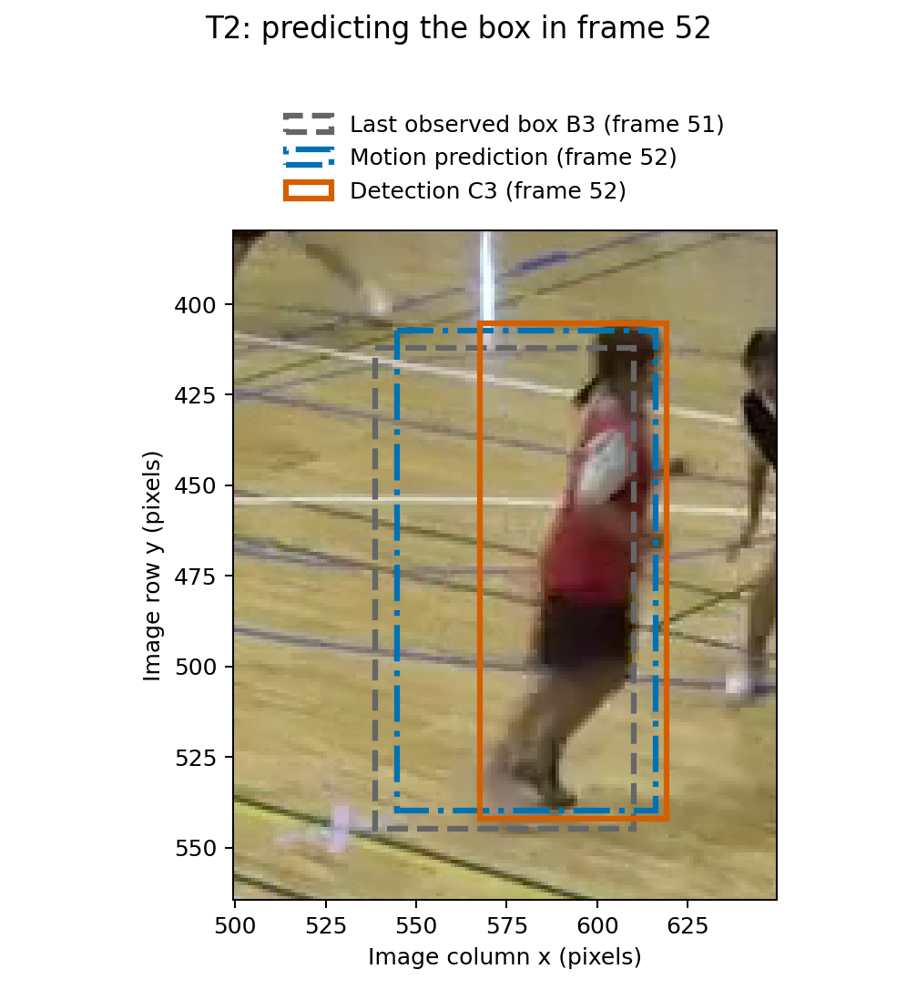
We can now compare the predicted box with the retained detections in frame 52. Its IoU with C3 is approximately 0.63, compared with 0.50 when we use B3 unchanged. C3 is the only retained detection with positive overlap with this prediction.
The same calculation for T4 gives a different result:
| Track | Detection in frame 52 | IoU using the last observed box | IoU using the predicted box |
|---|---|---|---|
| T2 | C3 | 0.50 | 0.63 |
| T4 | C5 | 0.93 | 0.77 |
For T4, the prediction overshoots C5’s centre to the right. The player’s motion can change between frames, and the detected boxes vary too. We next need to update our position and velocity estimates using the new detections.
11.2 Using the motion prediction
In our online approach we process the video one frame at a time. For each new frame, we use each track’s earlier detections to form a box for comparison with the current detections. We then match detections to tracks and update their records. We carry these updated records, including the newly associated detections, forward when processing the next frame. This repeated sequence is the tracking loop.
Until now, the IoU calculation has compared each new, not-yet-associated detection with an active track’s last observed box, using that box to represent the tracked object. We now consider how we might improve the box representing the tracked object for comparison with the current detections.
First, consider the track record. This contains a track ID and the detections assigned to it in earlier frames. For example, when we begin processing frame 52, T2’s record contains A3 from frame 50 and B3 from frame 51. As in the preceding section, we use these two observations to estimate T2’s velocity and predict its box in frame 52 using the constant-velocity model.
If we don’t have enough past detections assigned to a track to estimate its velocity, we use its most recent detected box unchanged for matching. For example, T6 has only A7 from frame 50, with no assigned detection in frame 51, so we use A7 unchanged for matching in frame 52.
We prepare a box to represent the object associated with each active track, using that track’s history. If a record contains more than two assigned detections, we use the two most recent ones to estimate velocity. They need not come from consecutive frames: we divide the change in centre position by the number of frames between them. We then compare all these boxes with the new detections C2–C7 using the same one-to-one IoU assignment and minimum-IoU rule as before.
For T2, we compare its motion-predicted box for frame 52 with C3, giving IoU 0.63. For T6, we compare its unchanged A7 box from frame 50 with C7, giving IoU 0.88. The assignment selects both links, and both pass our threshold of 0.30. We add C3 to T2’s record and C7 to T6’s record as their frame-52 observations, keeping their detected coordinates. That is, the observations we associate with the tracks are the actual detections, not the predicted boxes. T6’s empty frame-51 entry stays empty.
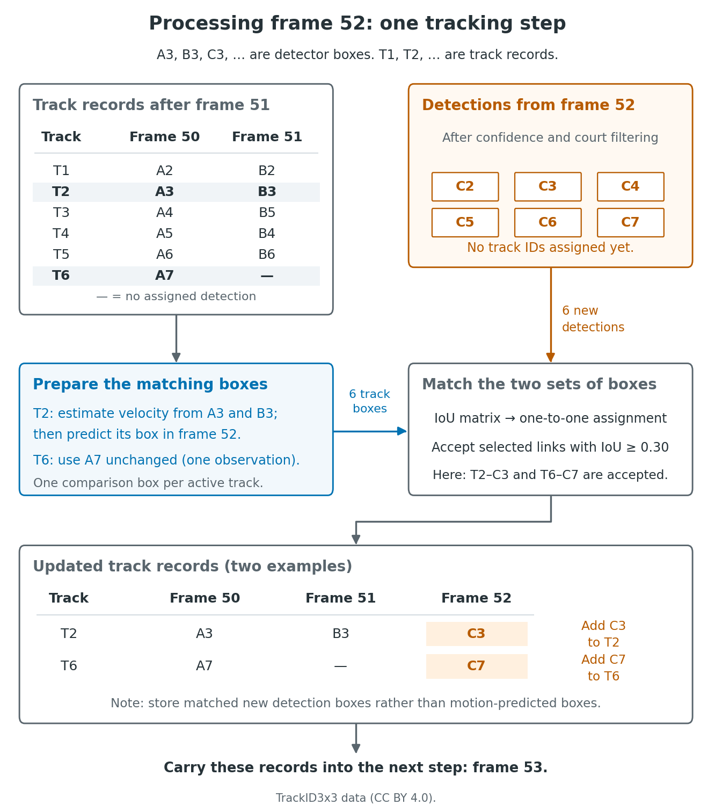
After frame 52, T2’s history contains A3, B3 and C3. To predict its box in frame 53, we use the two most recent observations, B3 and C3. Their horizontal centres are approximately 574 and 593 pixels, giving
\[ v_x \approx \frac{593-574}{52-51} =19\quad\text{pixels per frame}. \]
Starting from C3, our horizontal-centre prediction for frame 53 is then
\[ x_{\mathrm{predicted},53} \approx 593+19=612\quad\text{pixels}. \]
We apply the same calculation to the vertical centre coordinate and keep C3’s width and height when forming the predicted box.
T6 now also has two assigned detections, A7 from frame 50 and C7 from frame 52, despite having no assigned detection in frame 51. Its velocity estimate is therefore the change in centre position divided by 2, not 1. We use C7’s position plus one frame of this estimated motion to predict its box in frame 53.
We then match the frame-53 comparison boxes to the frame-53 detections and update the records again. The rules for unmatched tracks and new detections are unchanged.
11.3 Does the motion prediction help?
We can compare the two tracking methods over frames 50–100. Both receive the same detections, selected using the confidence cutoff of 0.50 and the court filter. We also keep the tracking IoU threshold of 0.30 and the three-miss inactivity rule unchanged. The only difference then is whether we compare new detections with the last observed boxes or with motion-predicted boxes.
At frame 64, T2 labels the player in red and T4 labels the player in black in both runs. Neither track is assigned a detection in frame 65. The saved boxes around the red and black players have confidence scores of about 0.43 and 0.48, respectively. They have passed NMS and would pass the court filter, but both fall below our confidence cutoff of 0.50.
In both runs, at frame 66 there is a retained detection around the player in red, with confidence about 0.59. Other saved boxes overlapping this pair of players fall below the confidence cutoff, so each tracker receives only one retained detection for the pair. The two trackers assign this same detection to different tracks, as shown below.
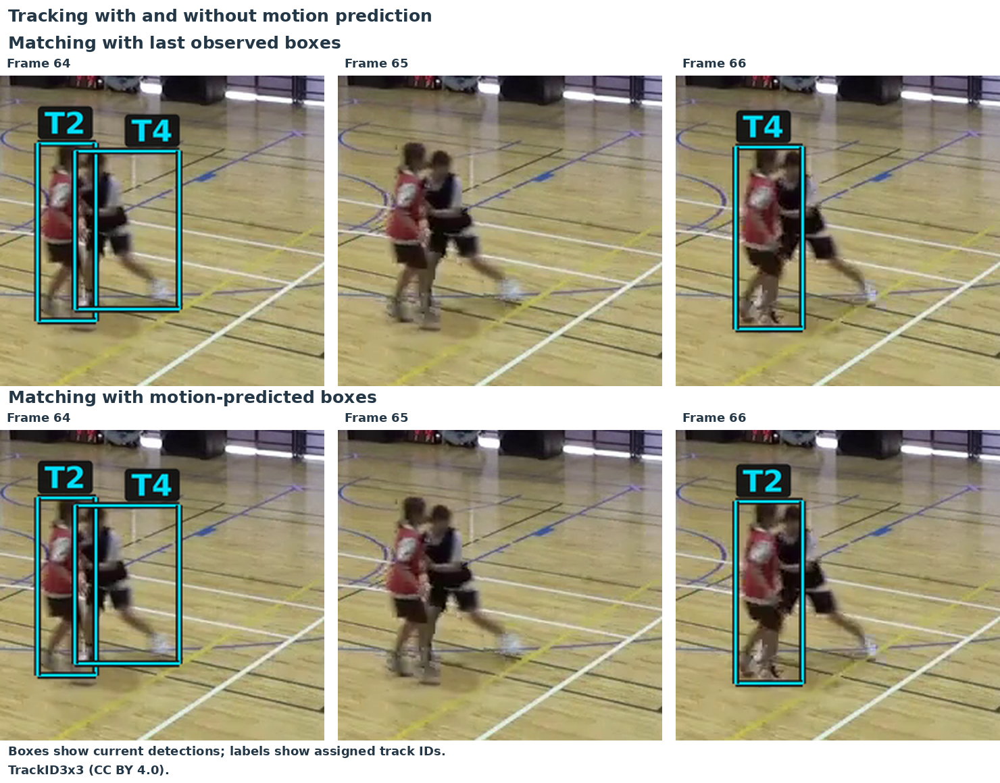
For this frame-66 detection (around the player in red), the IoUs are:
| Track | IoU with last observed box | IoU with motion-predicted box |
|---|---|---|
| T2 | 0.38 | 0.73 |
| T4 | 0.40 | 0.00 |
With last-box matching, the one-to-one assignment gives this detection to T4, which was following the player in black. With motion prediction, the assignment instead gives it to T2, which was following the player in red. Both selected links pass the threshold of 0.30.
Here, motion prediction allows T2 to continue following the player in red across the gap. Note that T2’s frame-65 entry still remains empty.
Motion prediction avoids the frame-66 switch, but the frame-74 switch we examined earlier still occurs in both runs. T7 labels the player in black at frame 71, but the player in red by frame 74. The detection around the player in black starts a new track, T8.
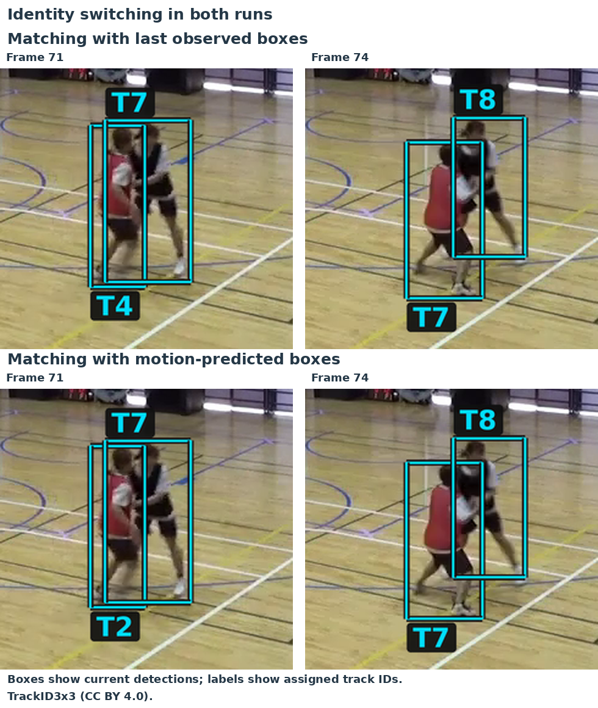
11.4 Changing the confidence cutoff
We have already seen that changing the confidence cutoff will change the detections available to the tracker. To investigate, we can consider using a confidence cutoff of 0.40 for detections instead of 0.50 throughout frames 50–100. We keep the court filter, tracking IoU threshold of 0.30 and three-miss inactivation rule the same.
The two boxes around the red and black players in frame 65, with confidence scores of about 0.43 and 0.48, are now both retained. Both trackers assign them to T2 and T4, respectively. In frame 66, both methods now assign the red-player detection to T2. Thus, with these additional observations, even last-box matching avoids the frame-66 switch seen at the higher cutoff.
The switch between frames 71 and 74 is also no longer present in either run at 0.40. However, the motion run has already switched earlier: T2 labels the player in red at frame 66, but the player in black by frame 71, while T4 labels the player in red. These incorrect labels remain at frame 74.
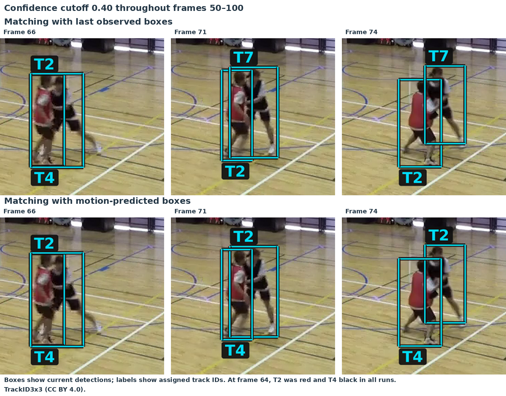
Not all the additional detections are useful. At frame 67, the lower cutoff retains three boxes around these two players, including a broad box overlapping both. At frame 73, it also retains a second box around another player who already has a detection assigned to T6. In both runs, the additional box starts a temporary duplicate track, T8.
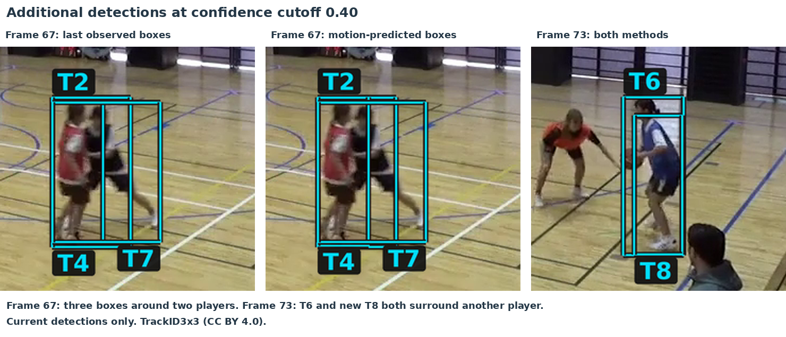
Lowering the cutoff can therefore recover useful observations, but it can also introduce detections that make tracking harder. The original SORT paper emphasises that detection quality is a key factor influencing tracking performance. Here confidence cutoff is one choice that affects which detections reach the tracker, though no choice, whether higher or lower, is obviously better in the present example.
11.5 Filtering the motion estimates
Our current motion predictor estimates velocity from the two most recent detections. Errors in their positions therefore also affect the velocity estimate, which we then use to predict the next position.
For a simple example, suppose an object moves horizontally by 4 pixels per frame. Its true centre positions in four consecutive frames are 20, 24, 28 and 32 pixels. Suppose the first two detections give the correct positions, but the third gives 40 instead of 28. Our estimated velocity is then
\[ v = 40 - 24 = 16\quad\text{pixels per frame}, \]
and the predicted position in the fourth frame is
\[ x_{\mathrm{predicted}} = 40 + 16 = 56\quad\text{pixels}. \]
The true position is 32 pixels. The error in the third detection affects both the position from which we predict and the velocity used in that prediction.
A filter, in the context of state estimation and tracking, combines a motion prediction with a new observation to update our estimate of the object’s state (true position and velocity).
In the present application, we predict the object’s position in the new frame based on earlier frames, and the centre of a detected bounding box in the new frame is treated as a new noisy measurement of the current position. We then aim to combine the predicted and detected positions to obtain a new position state estimate for the current frame.
As a simple example, for one position coordinate, we can combine the predicted and detected positions using a weighted average:
\[ x_{\mathrm{updated}} = (1-k)x_{\mathrm{predicted}} + kx_{\mathrm{detected}}, \qquad 0\leq k\leq 1. \]
Here \(k\) controls how much weight we give the new detection. A value close to 1 puts most of the weight on the detected position, while a value close to 0 puts most of the weight on the prediction. Equivalently,
\[ x_{\mathrm{updated}} = x_{\mathrm{predicted}} + k\bigl(x_{\mathrm{detected}}-x_{\mathrm{predicted}}\bigr). \]
Thus we see the idea is to form the update as a corrected prediction, based on the difference between the predicted and detected positions. The degree to which we weight the prediction or the new observation needs to be determined.
A Kalman filter uses estimates of uncertainty to determine these correction weights. A more uncertain observation receives less weight relative to the prediction; a more uncertain prediction receives less weight relative to the observation. The filter combines the motion model with an observation model describing errors in the detected positions. It updates the velocity estimate as well: an error in velocity produces a position error during prediction, so the position discrepancy also provides information about velocity. We will not describe Kalman filters in detail here, but they are used in the SORT tracking algorithm and are widely used in navigation and control systems more generally.
If we take this approach, our tracking loop now also carries filtered estimates of position and velocity for each track. Given a new frame, we first use the previous estimates to predict the object’s next box and perform the same IoU-based matching to detections as before, using the (uncorrected) prediction and new detection. Once the new prediction–detection pair has been established, we carry out the filter’s correction step for the position and velocity estimates, in preparation for predicting the next frame. In this example, we keep the width and height of the latest observed box for the estimated box.
In terms of recording the results, we still record the actual detection alongside the current estimated position and velocity. Saving these observations and state estimates at each frame lets us compare the detection history with the estimated trajectory for the same track. When an active track has no assigned detection, its detection history has a gap, while the motion model provides a predicted position for that frame.
11.6 Filtering the basketball tracks
We can now repeat the basketball example using Kalman-filtered motion in place of the two-observation motion predictor. We again track frames 50–100 at confidence cutoff 0.40, keeping the court filter, tracking IoU threshold of 0.30 and three-miss inactivation rule the same. The filter’s correction weights depend on assumptions about measurement noise and changes in motion. Here we use fixed, illustrative noise settings that have not been calibrated to this video.1
At frame 64, T2 labels the red player and T4 the black player. With the two-observation predictor, these labels have been exchanged by frame 71 and remain exchanged at frame 74. With filtering, T2 still labels the red player and T4 the black player in both frames. The boxes shown below are the detections assigned to each track.
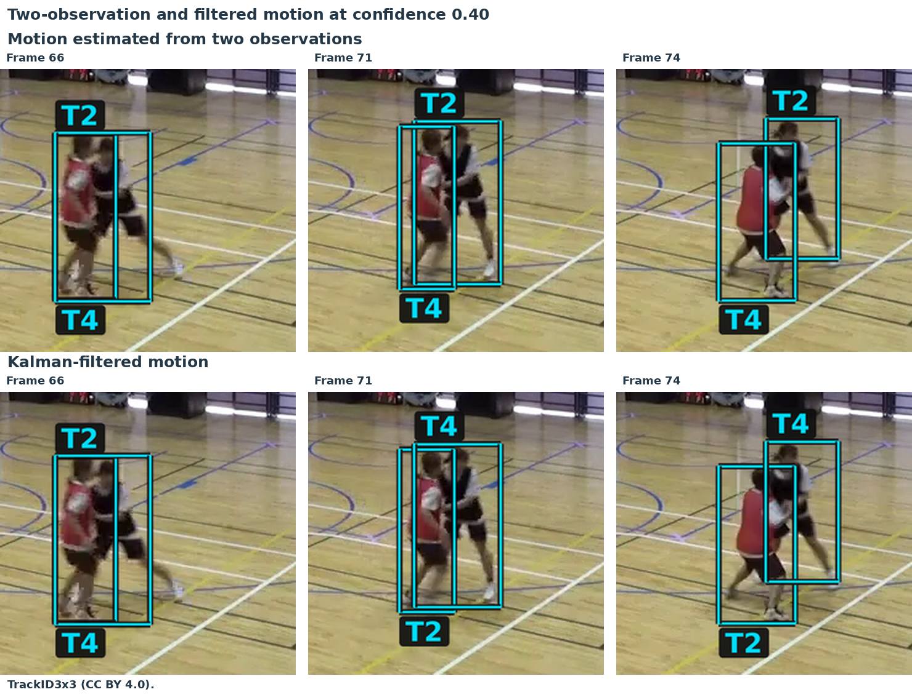
At the original confidence cutoff of 0.50, last-box matching, the two-observation predictor and Kalman-filtered motion all show the earlier frame-74 identity error. At 0.40, last-box matching avoids this red/black exchange, but the black player’s ID has changed from T4 to T7. Filtering keeps both original IDs through this interaction, using the additional detections available at 0.40. These additional detections also include duplicate boxes, and all three methods still create temporary duplicate tracks.
We also compare filtered motion with our original last-box method over the full clip (frames 1–142), starting both trackers at frame 1 and using the cutoff of 0.40. In this new run, T2 labels the orange-shirted player below. At frame 116, a duplicate detection creates a second track, T12, for the same player.
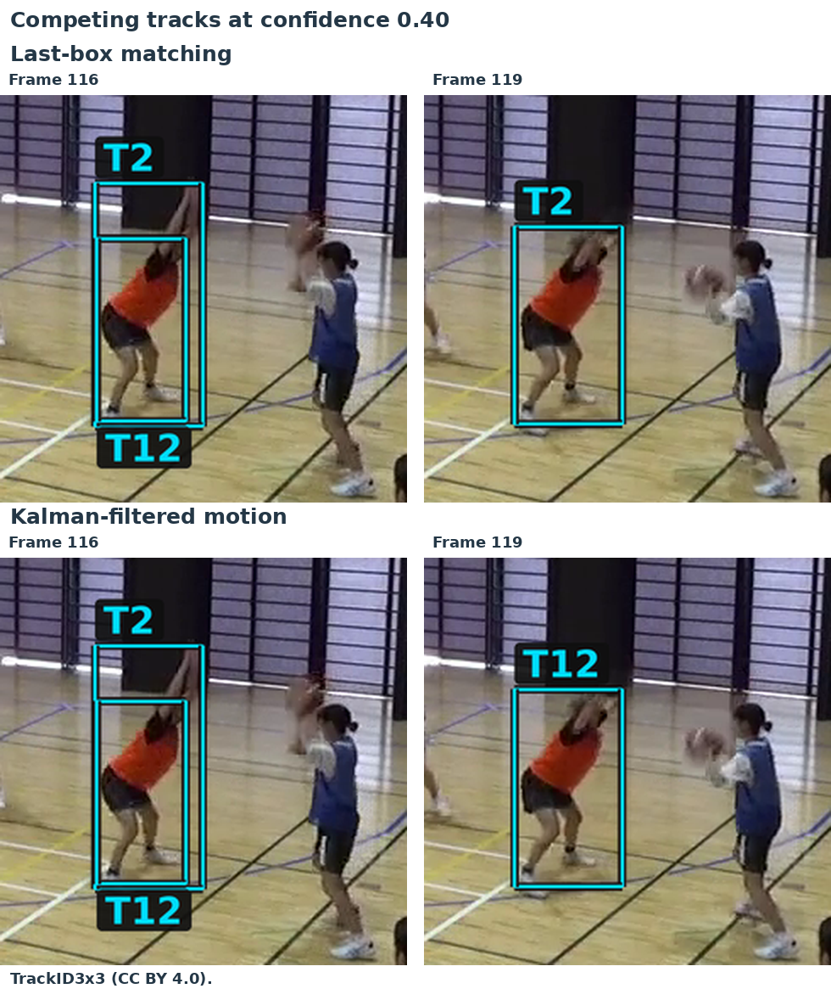
At frame 119, last-box matching keeps T2, while filtered motion assigns the detection to T12. The T2 reference box has IoU 0.776 with the detection under last-box matching, and 0.743 when predicted from the filtered state. The competing T12 reference has IoU 0.749 in both runs. All these overlaps are above the acceptance cutoff of 0.30, but the one-to-one assignment selects a different track in each case.
With the settings used here, adding Kalman filtering gives a local improvement in the assigned track IDs but no clear overall advantage over last-box matching across this short clip. Missing detections and competing tracks created by duplicate boxes still cause problems.
A clearer benefit can arise for an object moving a substantial distance between frames at roughly constant speed and direction, with noisy position measurements. The motion model predicts beyond the last observed box, while the filter combines observations over time to reduce the effect of individual detection errors on the position and velocity estimates.
Source images: TrackID3x3, CC BY 4.0.
11.7 Practical trackers and appearance information
We have used three ways to form the reference box for matching a track to a new detection:
| Reference | How we form it |
|---|---|
| Last observed box | Use the box from the most recent detection assigned to the track. |
| Two-observation motion | Estimate velocity from the two most recent observations and predict the next box. |
| Kalman-filtered motion | Predict from position and velocity estimates that combine earlier predictions and observations. |
A complete tracker combines its motion model and matching method with rules for starting, confirming and ending tracks. The following methods illustrate different combinations of these ideas:
| Method | Main ideas |
|---|---|
| SORT | Kalman box prediction, IoU association and track management. |
| Deep SORT | Kalman motion prediction and learned appearance information for association. |
| ByteTrack | Kalman motion prediction; match high-confidence detections first, then use lower-confidence detections to update remaining active tracks. |
| BoT-SORT | ByteTrack-style association with a revised box-motion model, camera-motion compensation and optional appearance matching. |
Our small filter-based tracker shares its basic structure with SORT, although SORT also models box size and has different track-confirmation and expiry rules. We can now consider two further sources of information used by these methods: detection confidence and appearance.
11.7.1 Using confidence differently for updates and new tracks
In our simple loop, an unmatched detection that passes the confidence cutoff starts a new track. ByteTrack separates the evidence needed to update a track from that needed to start one. It first matches high-confidence detections to existing tracks. It then tries lower-confidence detections against the remaining unmatched active tracks. These lower-confidence boxes can update those tracks, but cannot start new ones.
In our frames 50–100 test, the high threshold is 0.50 and the second stage uses scores between 0.10 and 0.50. It supplies six additional player observations compared with the same ByteTrack given only high-confidence inputs, including observations of the red and black players at frame 65. The benefit of this second stage is fewer gaps in the assigned detections.
At frame 73, the box with confidence about 0.69 updates T6. The overlapping box with confidence about 0.42 is unused: T6 has already been matched, and this lower-confidence box cannot start a new track. It therefore avoids the extra record created by our simple tracker at cutoff 0.40.
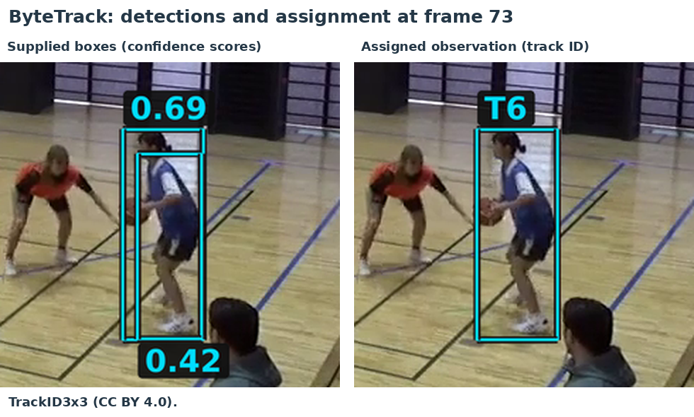
Allowing weak observations can also affect later associations. In our full-clip test with high threshold 0.40, enabling the lower-confidence updates recovered additional observations but also produced more ID changes and duplicates than withholding those boxes.
11.7.2 Using the image inside the box
The image inside each box provides another source of information about which player it belongs to. A network trained for person re-identification (ReID) maps a cropped person image to a vector of features, or an appearance embedding. Its training encourages different images of the same person to have similar vectors. The tracker can compare a new crop with earlier crops assigned to a track, alongside its comparison of box positions.
We tested BoT-SORT with its appearance component switched off and on, keeping the other settings and supplied detections the same. Both runs cover frames 50–100 with high threshold 0.50. Camera-motion compensation is switched off for our fixed-camera video, and the appearance network is pretrained rather than trained on this basketball sequence.
At frame 71, both runs label the red player T2 and the black player T4. Both assign T4 to the red player at frame 73. With appearance enabled, the red player regains T2 at frame 74 and the black player regains T4 at frame 76. Without appearance, the red player remains T4 and the black player T2 through the rest of the run. The figure shows the assigned detection boxes.
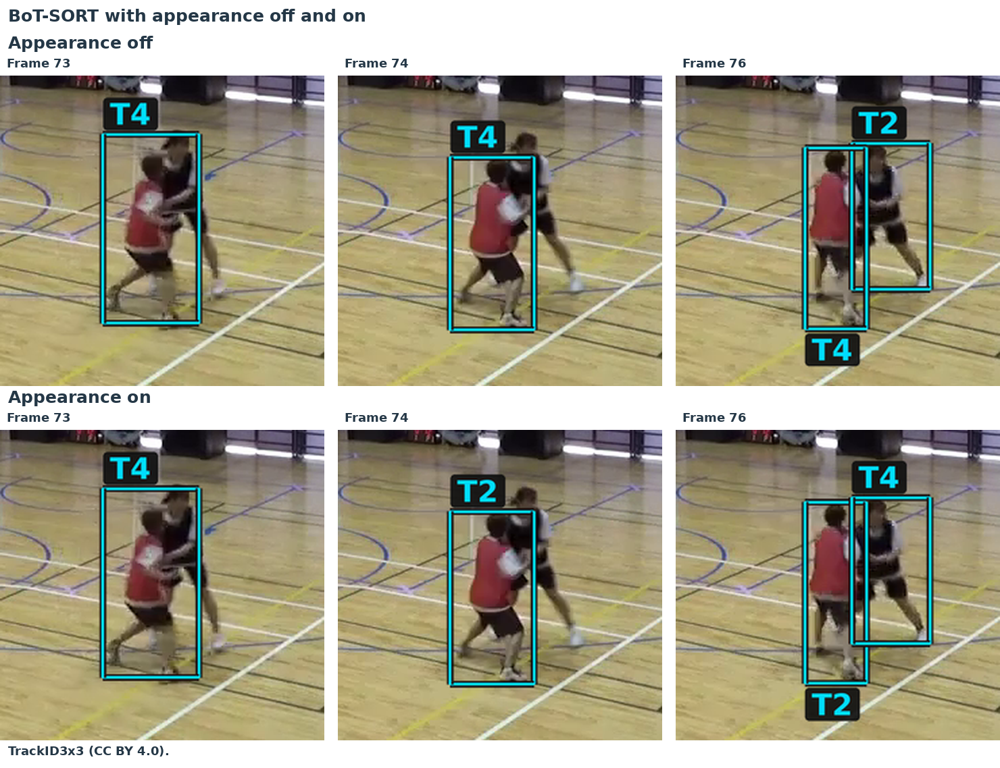
Appearance can also favour a duplicate detection. In a run starting at frame 1 with the same high threshold of 0.50, the appearance-enabled tracker selects a lower-confidence duplicate at frame 27 because its crop is slightly more similar to the track’s stored appearance. The other, higher-confidence box then starts an additional track. Both crops depict the same player: appearance similarity alone does not select the better-localised box or prevent a duplicate record. The way the tracker combines appearance, confidence and track-management rules therefore still matters.
Source images: TrackID3x3, CC BY 4.0.
11.8 Modern directions: promptable video segmentation
In Image analysis tasks, we introduced instance segmentation, which identifies the pixels belonging to each separate object. This gives us a pixel mask for each player. We can also follow these masks through a video, keeping a consistent ID for each player.
Models such as SAM 3 support this kind of tracking. We can select an object using a box prompt: a rectangle indicating which object we want the model to segment and follow.
Here we use the six YOLO11n detections from frame 50 as initial box prompts. These are the same boxes retained by our confidence threshold of 0.50 and court filter. We give the selected objects IDs S1–S6, and SAM 3 predicts a mask for each one.
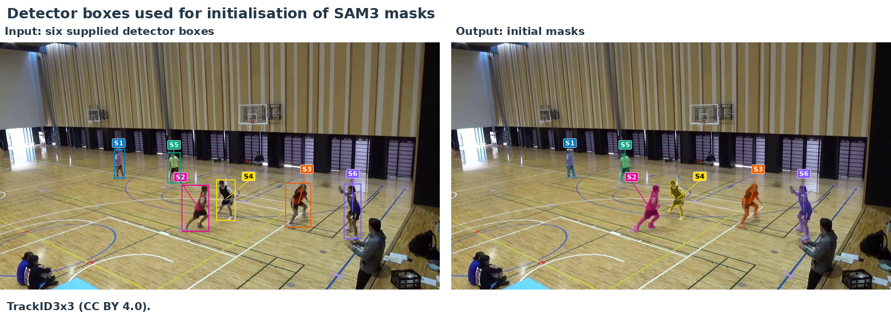
After frame 50, we supply only the subsequent video frames, with no further YOLO detections or corrective prompts. SAM 3 uses each new image together with stored visual information from earlier frames to predict the six masks. In this example, it maintains the six identities through frame 100. The frames below show S2 and S4 remaining with the red- and black-shirted players as they overlap.
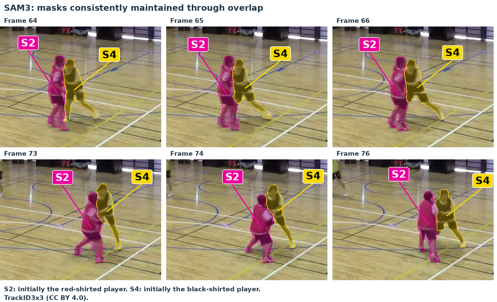
SAM 3 tracking the six players, shown in slow motion.
This is online tracking: each step uses the current image and information from earlier frames. However, real-time tracking also requires processing to keep up with the video. In the experiment we ran SAM3 processed the frames more slowly than they would arrive from a live camera so could not be used for real-time tracking.
Video and images: TrackID3x3, CC BY 4.0.
Per image coordinate, we use a measurement-error standard deviation of 4 pixels and an acceleration-noise standard deviation of 1 pixel/frame². A new track starts with zero estimated velocity, position standard deviation 4 pixels and velocity standard deviation 10 pixels/frame.↩︎